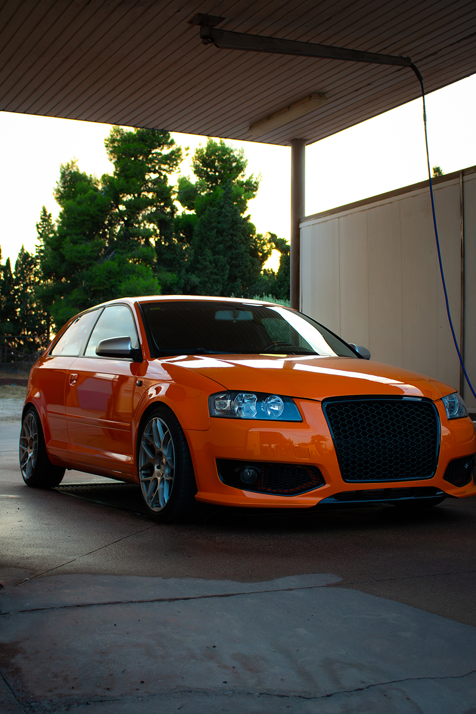
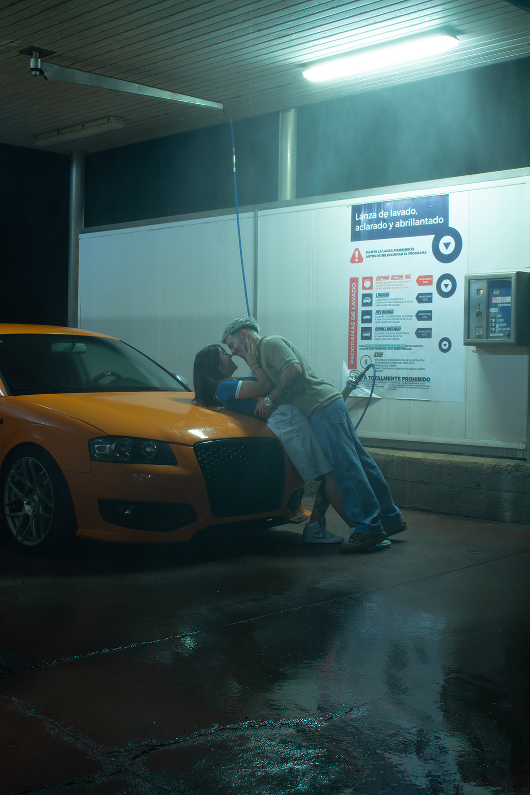
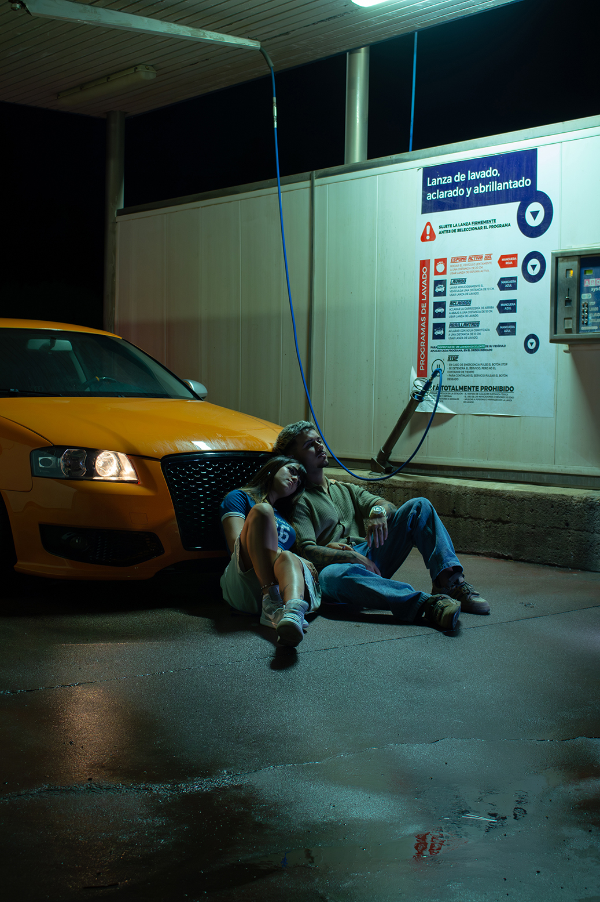
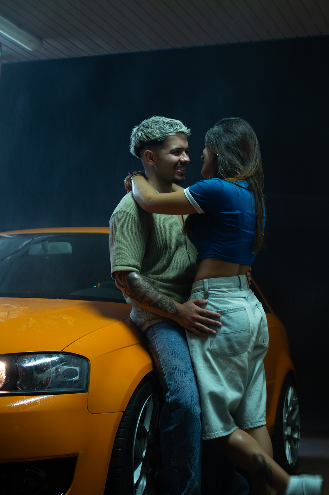
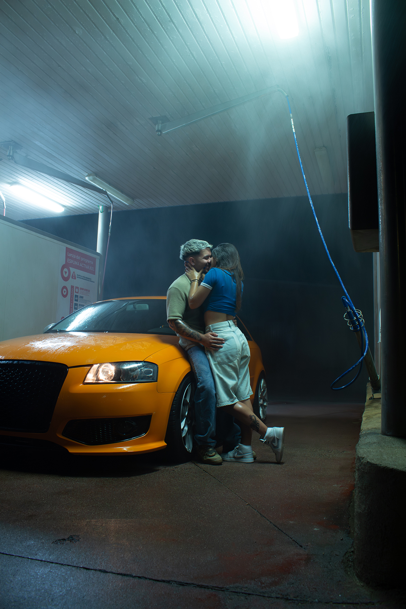
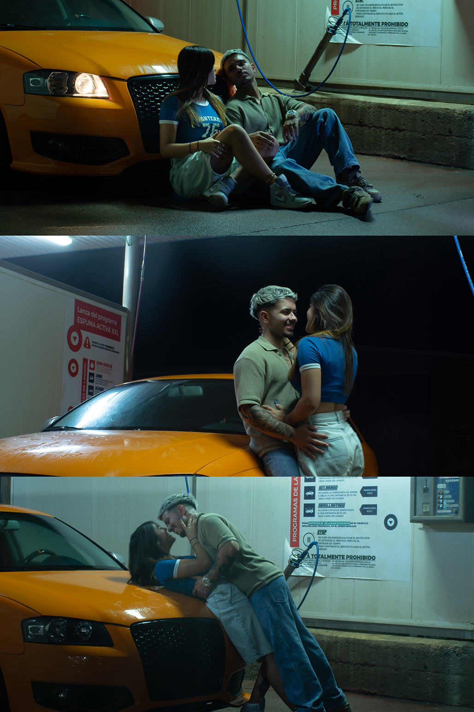

Bajo la neblina
Un instante donde el amor florece en la intimidad de lo conocido. En medio del ruido metálico y el
brillo artificial, dos cuerpos se encuentran y rompen la frialdad del entorno. Estas fotografías
destacan por una iluminación y un estilo cinematográfico, donde algunas finas gotas de agua difuminan
los rayos de luz.
Fotografía captada por: Eva Díaz Pérez
Modelos: Mario Diezma Moreno y Henar Manzano Rodriguez
Vehículo: Audi a3






